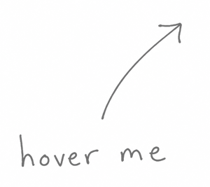

Beamhook
Turn Spotify down, mute a noisy app, or lower one browser tab. Everything else stays where it was. It all lives in your menu bar.
Play/pause, next and previous go to the app you pick, not whatever played last. Read why media keys hit the wrong app or how per-app volume works.
Signed, notarized and ready to run, with all 1.x updates. It’s the same app you’d build from the source. Buying it supports development.
The code is open, so you can check exactly what Beamhook does with your keys. Clone it and build with one command. The README explains how.
Yes. Each app playing sound gets its own volume slider and mute button, and other apps keep their levels. Apps without their own volume control need macOS 14.2 or later.
Yes, in Safari, Chrome, Brave, Arc and Vivaldi. Turn on Allow JavaScript from Apple Events in the browser first. You can also change the whole browser’s volume. Firefox tabs aren’t supported.
macOS asks for it whenever an app changes the volume of other apps. Beamhook adjusts the sound as it plays and never records or saves it.
The source code is free, and you can build the app yourself. The signed, ready-to-run app costs €5 once and includes all 1.x updates.
Found a bug, or want another app supported?
Open an issue on GitHub.